<!DOCTYPE html>
<html>
  <head>
    <meta charset="utf-8">
    <meta name="viewport" content="width=device-width, initial-scale=1.0">
    <meta name="description" content="Рассказываю на&amp;nbsp;примере компонента «Календарь», как типичная на&amp;nbsp;первый взгляд задача способна довести продуктового дизайнера до&amp;nbsp;слёз.">
    <meta property="og:type" content="article">
    <meta property="og:title" content="Почему дизайнерам компонентов нужно доплачивать за&amp;nbsp;вредность • Артём Самсонов • Продуктовый дизайнер">
    <meta property="og:description" content="Рассказываю на&amp;nbsp;примере компонента «Календарь», как типичная на&amp;nbsp;первый взгляд задача способна довести продуктового дизайнера до&amp;nbsp;слёз.">
    <meta property="og:image" content="http://artemsamsonov.com/img/case-03.jpg">
    <meta property="og:locale" content="ru_RU">
    <meta name="twitter:card" content="summary_large_image">
    <meta name="twitter:title" content="Почему дизайнерам компонентов нужно доплачивать за&amp;nbsp;вредность • Артём Самсонов • Продуктовый дизайнер">
    <meta name="twitter:description" content="Рассказываю на&amp;nbsp;примере компонента «Календарь», как типичная на&amp;nbsp;первый взгляд задача способна довести продуктового дизайнера до&amp;nbsp;слёз.">
    <meta name="twitter:image" content="http://artemsamsonov.com/img/case-03.jpg">
    <link href="https://fonts.googleapis.com/icon?family=Material+Icons" rel="stylesheet">
    <link rel="stylesheet"><!-- Yandex.Metrika counter --> <script type="text/javascript" > (function(m,e,t,r,i,k,a){m[i]=m[i]||function(){(m[i].a=m[i].a||[]).push(arguments)}; m[i].l=1*new Date();k=e.createElement(t),a=e.getElementsByTagName(t)[0],k.async=1,k.src=r,a.parentNode.insertBefore(k,a)}) (window, document, "script", "https://mc.yandex.ru/metrika/tag.js", "ym"); ym(88097279, "init", { clickmap:true, trackLinks:true, accurateTrackBounce:true, webvisor:true }); </script> <noscript><div></div></noscript> <!-- /Yandex.Metrika counter -->
    <title>Почему дизайнерам компонентов нужно доплачивать за&amp;nbsp;вредность • Артём Самсонов • Продуктовый дизайнер</title>
    <script type="application/ld+json">
      {
        "@context": "https://schema.org",
        "@type": "Person",
        "name": "Артём Самсонов",
        "url": "https://artemsamsonov.com",
        "image": "https://artemsamsonov.com/og-preview.jpg",
        "sameAs": [
          "https://t.me/forrrealism",
          "https://www.linkedin.com/in/a-samsonov/"
        ],
        "jobTitle": "Ведущий продуктовый дизайнер",
        "worksFor": {
          "@type": "Organization",
          "name": "getmatch"
        }
      }
    </script>
  <link href="./css/style.bundle.css" rel="stylesheet"></head>
  <script type="application/ld+json">
    script(type="application/ld+json").
      {
        "@context": "https://schema.org",
        "@type": "CreativeWork",
        "name": "Почему дизайнерам компонентов нужно доплачивать за вредность",
        "description": "Рассказываю на примере компонента «Календарь», как типичная на первый взгляд задача способна довести продуктового дизайнера до слёз",
        "author": {
          "@type": "Person",
          "name": "Артём Самсонов",
          "url": "https://artemsamsonov.com"
        },
        "datePublished": "2024-12-01",
        "url": "https://artemsamsonov.com/calendar-from-hell",
        "inLanguage": "ru",
        "keywords": [
          "UX кейс",
          "HRTech",
          "UX дизайн",
          "UX оптимизация",
          "Редизайн интерфейса",
          "UX исследования",
          "Артём Самсонов"
        ],
        "image": "https://artemsamsonov.com/img/artemsamsonov.com/img/case-03.jpg"
      }
  </script>
</html>
<body class="body_light">
  <header class="header header_light">
    <div class="header__logo"><a href="index.html">Артём Самсонов</a></div>
    <div class="header__menu"><a class="header__menu-elem" href="https://t.me/forrrealism">telegram</a><a class="header__menu-elem" href="https://www.linkedin.com/in/a-samsonov/">linkedin</a></div>
  </header>
  <div class="content">
    <div class="article">
      <section>
        <h1>Почему дизайнерам компонентов нужно доплачивать за&nbsp;вредность</h1>
        <p class="article__annotation">Рассказываю на&nbsp;примере компонента «Календарь», как типичная на&nbsp;первый взгляд задача способна довести продуктового дизайнера до&nbsp;слёз.</p>
        <div class="article__list">
          <h4>Содержание статьи</h4><a href="#intro">Предисловие</a><a href="#step1">Этап 1. Делим дни по&nbsp;типам</a><a href="#step2">Этап 2. Добавляем точку отсчёта</a><a href="#step3">Этап 3. Проектируем взаимодействия</a><a href="#step4">Этап 4. Презентуем разработчикам. Обтекаем</a><a href="#step5">Этап 5. Испытываем компонент</a><a href="#step6" id="intro">Вы ещё живы?</a>
        </div>
      </section>
      <section>
        <h2>Предисловие</h2>
        <p>Настало время рассказать, почему я считаю дизайн компонентов одной из&nbsp;самых сложных задач в&nbsp;продуктовом дизайне.</p>
        <p>В&nbsp;качестве примера мы возьмём календарь компании Wrike, где я отвечал за&nbsp;дизайн-систему. С&nbsp;помощью этого календаря пользователи Wrike отмечали время, которое они потратили на&nbsp;те или&nbsp;иные задачи. Однако, его могли использовать и&nbsp;в&nbsp;других частях продукта для&nbsp;самых разнообразных целей.</p>
        <p>Конечно, первым делом мы должны собрать требования с&nbsp;заинтересованных в&nbsp;компоненте команд и&nbsp;узнать потребности пользователей. Но&nbsp;сегодня я не&nbsp;хочу углубляться в&nbsp;подготовительный этап. Давайте сфокусируемся именно на&nbsp;проектировании.</p>
        <p>Начнём с&nbsp;максимально примитивной заготовки. Вот она:</p>
        <p class="article__image" id="step1"><a href="../../img/calendar-01.jpg" target="_blank">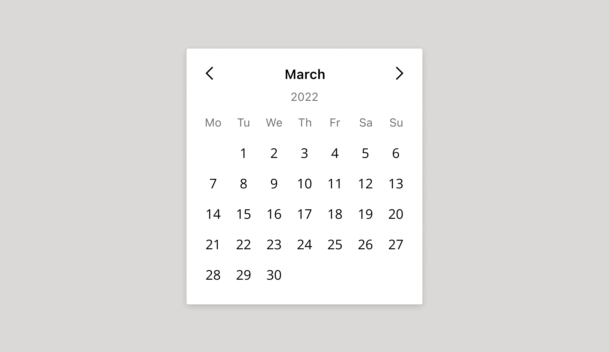</a></p>
      </section>
      <section>
        <h2>Этап 1. Делим дни по&nbsp;типам</h2>
        <p>Сразу же учтём простой нюанс. Не&nbsp;все знают, что в&nbsp;США и&nbsp;Великобритании неделя начинается с&nbsp;воскресенья. Нужно обязательно показать это в&nbsp;макете и&nbsp;указать в&nbsp;спецификации для&nbsp;разработчиков:</p>
        <p class="article__image"><a href="../../img/calendar-02.jpg" target="_blank">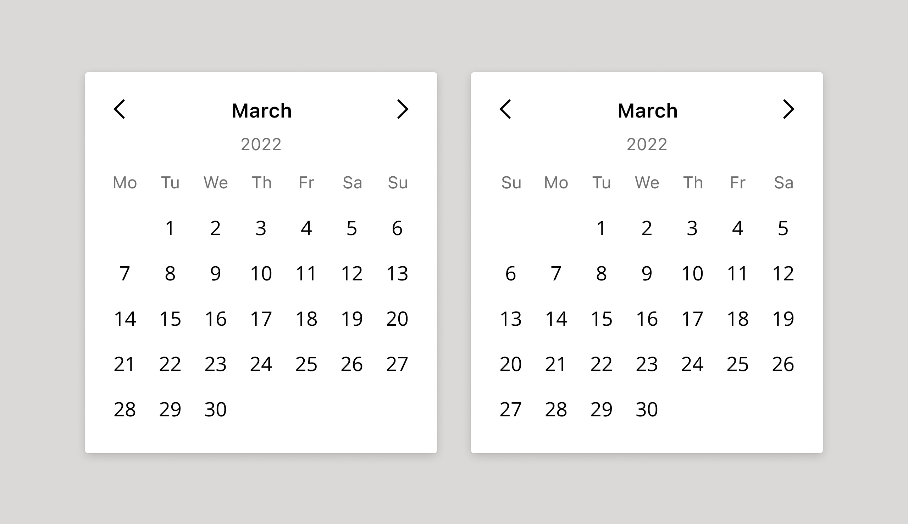</a><span class="article__image-caption">Слева — календарь для&nbsp;России, справа — вариант для&nbsp;США и&nbsp;Великобритании</span></p>
        <p>Давайте возьмём привычный нам календарь, где неделя начинается с&nbsp;понедельника. Первым делом отделим выходные дни от&nbsp;рабочих традиционным красным цветом:</p>
        <p class="article__image"><a href="../../img/calendar-03.jpg" target="_blank">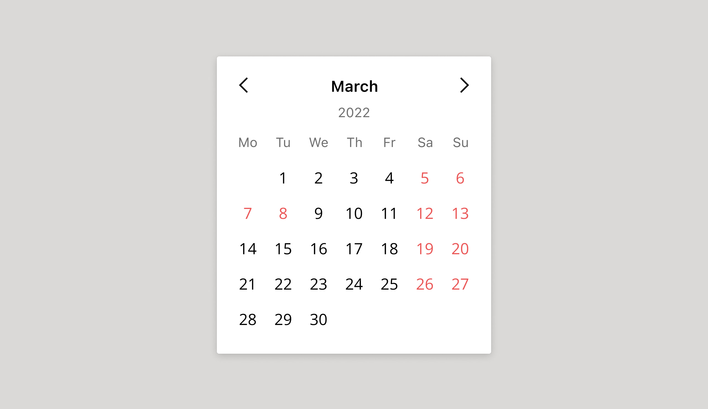</a></p>
        <p>Наши пользователи просили добавить ещё и
          <strike>нерабочие</strike> занятые дни. Чаще всего это дни, когда сотрудник уехал в&nbsp;командировку, выступает на&nbsp;конференции или&nbsp;гуляет на&nbsp;корпоративе. Формально человек потратил время на&nbsp;рабочие обязанности, но&nbsp;для&nbsp;команды его ресурсы были недоступны.
        </p>
        <p>Что ж, превращаем последнюю пятницу месяца (25 марта) в&nbsp;занятый день — корпоратив:</p>
        <p class="article__image"><a href="../../img/calendar-04.jpg" target="_blank">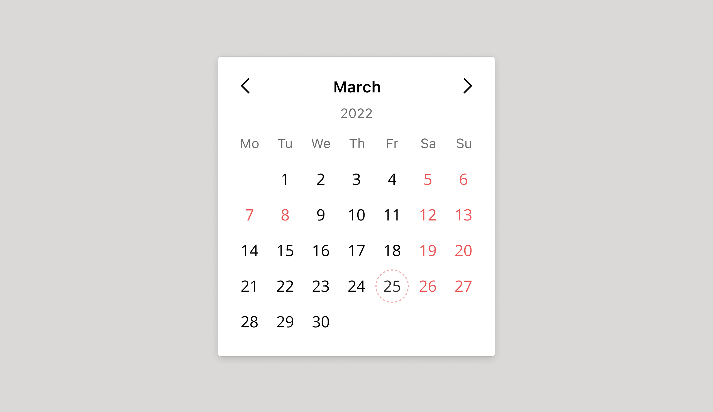</a><span class="article__image-caption">Рабочие дени чёрные, выходные — красные, а&nbsp;занятый день помечен алым пунктиром</span></p>
        <p id="step2">С&nbsp;типами дней закончили. Двигаемся дальше.</p>
      </section>
      <section>
        <h2>Этап 2. Добавляем точку отсчёта</h2>
        <p>Для&nbsp;большинства людей время линейно. Значит, в&nbsp;нашем календаре существует три отрезка: прошлое, сегодняшний день, будущее.</p>
        <p>Давайте добавим на&nbsp;календарь точку отсчёта. Обведём сегодняшний день, чтобы юзер не&nbsp;прилагал лишние когнитивные усилия каждый раз, когда открывает компонент:</p>
        <p class="article__image"><a href="../../img/calendar-05.jpg" target="_blank">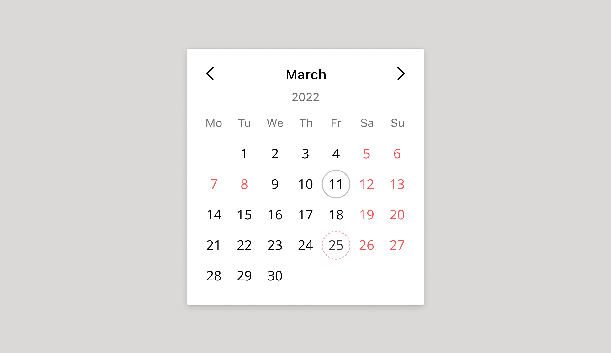</a><span class="article__image-caption">Судя по&nbsp;календарю, сегодня 11 марта. Мы сомневались в&nbsp;этом визуальном решении, по&nbsp;пользователи быстро к&nbsp;нему привыкли</span></p>
        <p>В&nbsp;некоторых случаях нам придётся блокировать прошедшие дни — например, когда пользователь выбирает дату для&nbsp;zoom-митинга. Мы ведь не&nbsp;можем назначить митинг на&nbsp;вчера, верно?</p>
        <p class="article__image"><a href="../../img/calendar-06.jpg" target="_blank">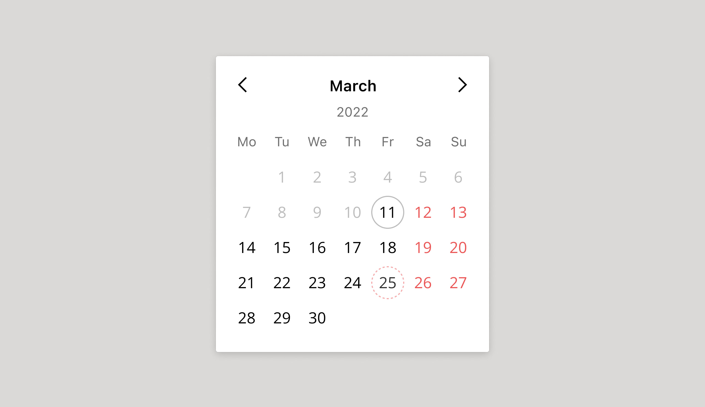</a><span class="article__image-caption">Прошедшие дни недоступны для&nbsp;выбора</span></p>
        <p>Итак, мы разделили дни по&nbsp;двум признакам. Дни могут быть рабочими, выходными и&nbsp;занятыми. Также они бывают прошедшими, настоящими и&nbsp;будущими.</p>
      </section>
      <section>
        <p id="step3">Теперь давайте подумаем, как пользователи будут взаимодействовать с&nbsp;компонентом.</p>
        <h2>Этап 3. Проектируем взаимодействия</h2>
        <h4>Наводим на&nbsp;даты</h4>
        <p>Как поведёт себя ячейка календаря, если мы наведём курсор на&nbsp;сегодняший день? А&nbsp;на&nbsp;будущий? Создаём общий стиль для&nbsp;обоих случаев:</p>
        <p class="article__image"><a href="../../img/calendar-07.jpg" target="_blank">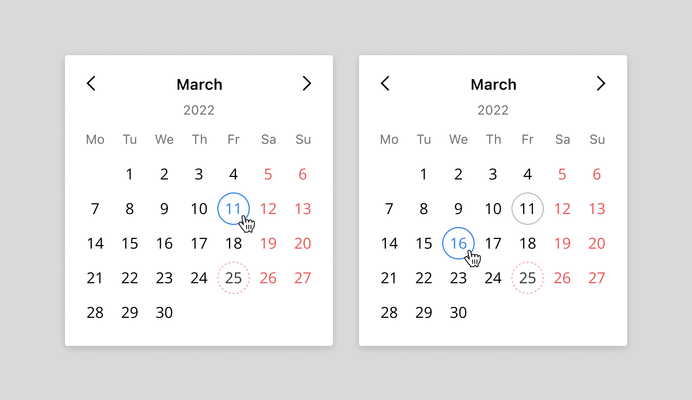</a><span class="article__image-caption">Слева hover-состояние для&nbsp;сегодняшнего дня, справа — для&nbsp;будущего</span></p>
        <p>Пользователь может навести курсор и&nbsp;на&nbsp;недоступные дни. Тогда лучше не&nbsp;молчать, а&nbsp;объяснить ему, почему он не&nbsp;сможет выбрать данную дату:</p>
        <p class="article__image"><a href="../../img/calendar-08.jpg" target="_blank">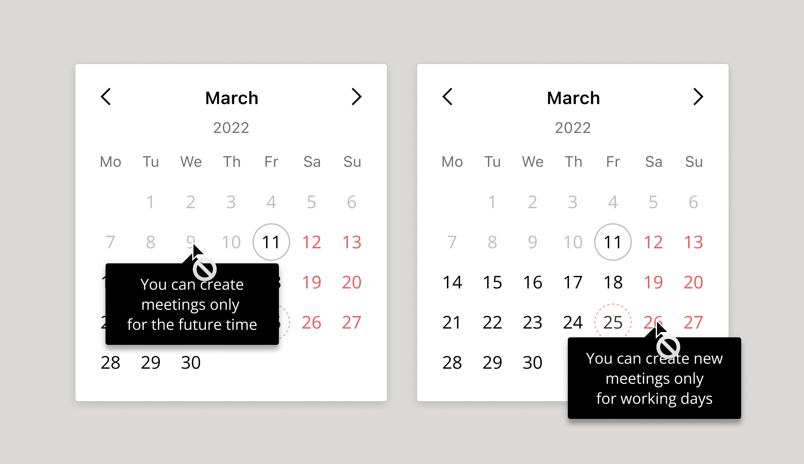</a></p>
        <h4>Выбор дат</h4>
        <p>А&nbsp;как пользователь будет выбирать нужный ему день? Это достаточно просто:</p>
        <p class="article__image"><a href="../../img/calendar-09.jpg" target="_blank">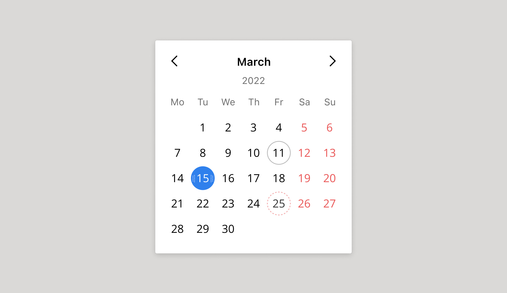</a><span class="article__image-caption">Пользователь выбрал 15 марта</span></p>
        <p>Часто пользователям нужно выбрать не&nbsp;конкретный день, а&nbsp;период. Например, отпуск или&nbsp;срок выполнения задачи:</p>
        <p class="article__image"><a href="../../img/calendar-10.jpg" target="_blank">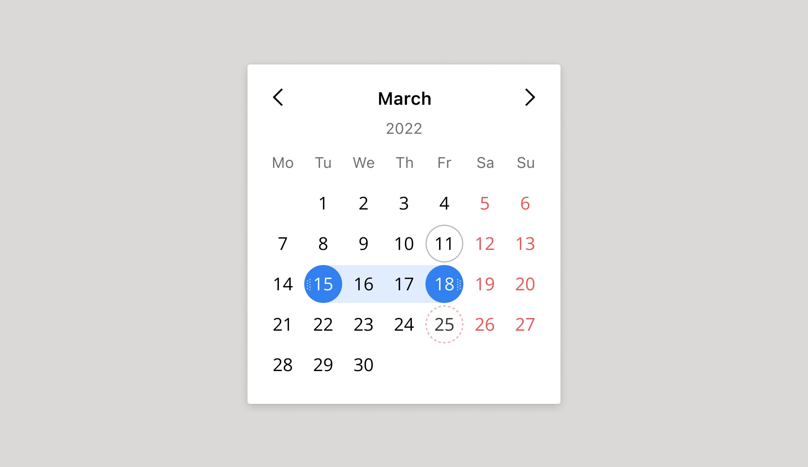</a><span class="article__image-caption">Пользователь собирается делать задачу 4 дня</span></p>
        <p>Большие задачи длятся неделями, проекты — месяцами. В&nbsp;таком случае в&nbsp;периоды неизбежно попадают выходные и&nbsp;занятые дни. Их нужно подсвечивать внутри периода. Вот пример, в&nbsp;который попали не&nbsp;только субботы и&nbsp;воскресенья, но&nbsp;и&nbsp;наш пятничный корпоратив:</p>
        <p class="article__image"><a href="../../img/calendar-12.jpg" target="_blank">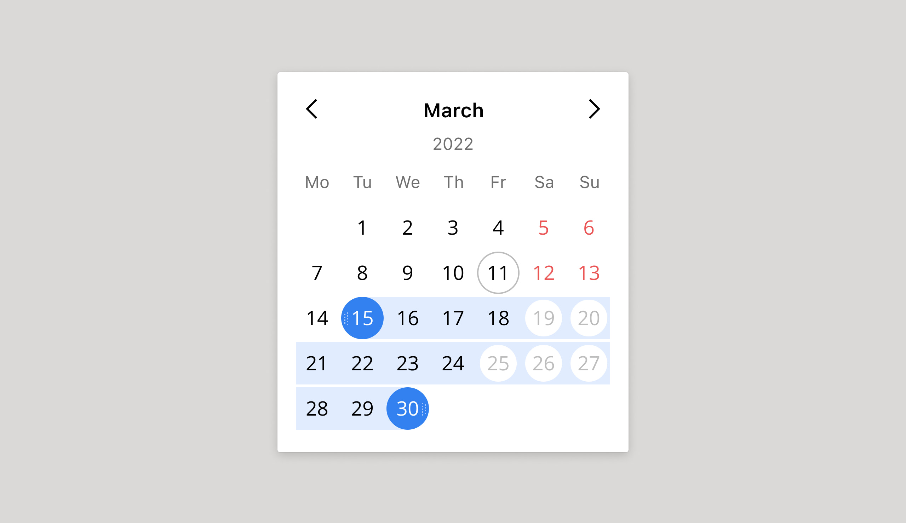</a><span class="article__image-caption">Из&nbsp;шестнадцати выделенных дней пользователь сможет посвятить задаче только одиннадцать</span></p>
        <p>В&nbsp;выбранный период может так же попасть сегодняшний день (11 марта). Для&nbsp;него тоже придётся использовать отдельный стиль:</p>
        <p class="article__image"><a href="../../img/calendar-13.jpg" target="_blank">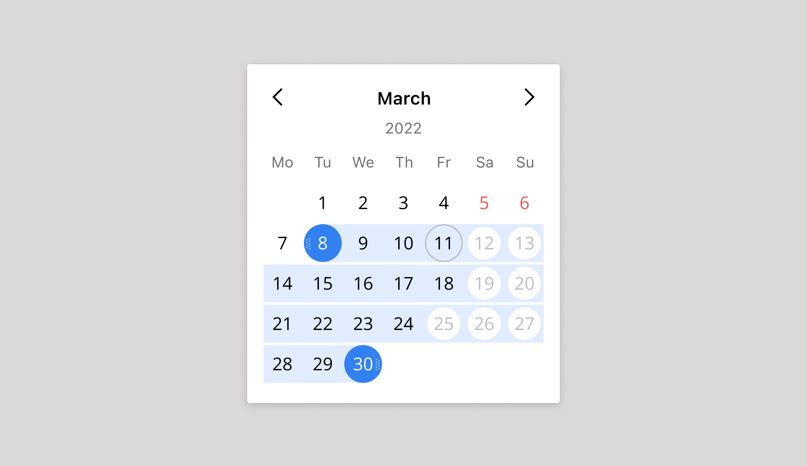</a></p>
        <p>Думаете, это всё? Как бы не&nbsp;так! Пользователь может выделить период, а&nbsp;затем наводить на&nbsp;выделенные дни мышкой. Например, чтобы понять, почему некоторые из&nbsp;них «подсвечены белыми кружочками».</p>
        <p>И&nbsp;нам обязательно нужно это объяснить:</p>
        <p class="article__image" id="step4"><a href="../../img/calendar-14.jpg" target="_blank">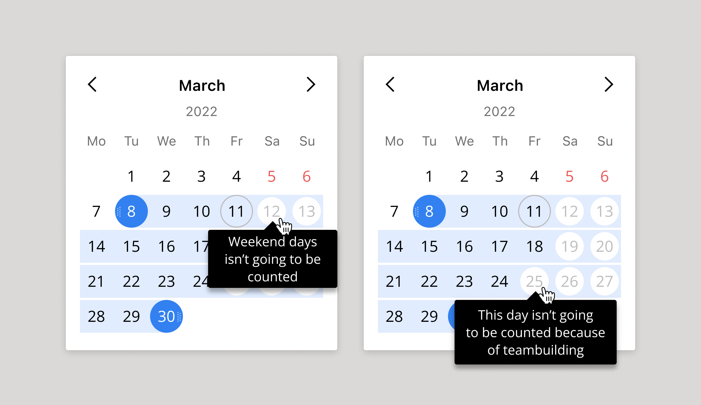</a></p>
      </section>
      <section>
        <h2>Этап 4. Презентуем разработчикам. Обтекаем</h2>
        <p>Как только вы решите, что ваш компонент готов для&nbsp;разработки, отнесите его на&nbsp;PBR и&nbsp;покажите команде. На&nbsp;этой замечательной встрече ваш концепт развалят своими едкими вопросами разработчики (за&nbsp;что вы начнёте их любить и&nbsp;ненавидеть одновременно).</p>
        <p>Вот пара вопросов, которые нанесут серьёзный урон вашей репутации продумана.</p>
        <h4>А&nbsp;что если сегодняшний день — выходной?</h4>
        <p>Действительно, мы забыли добавить ещё один стиль для&nbsp;таких случаев:</p>
        <p class="article__image"><a href="../../img/calendar-16.jpg" target="_blank"></a><span class="article__image-caption">Сегодня суббота, 12 марта. Пожалуйста, отдохните</span></p>
        <p>Не&nbsp;успели мы ответить на&nbsp;первый вопрос, как руку тянет Principal Java Developer:</p>
        <h4>«А&nbsp;что если пользователя попросили поработать в&nbsp;выходные? Как ему затрекать время?»</h4>
        <p id="step5">Чтобы окончательно не&nbsp;расплавиться, мы передадим эту проблему команде раздела Timetracking. Они разработают для&nbsp;таких случаев персональные производственные календари. Излишне усложнять компонент тоже не&nbsp;стоит.</p>
      </section>
      <section>
        <h2>Этап 5. Испытываем компонент</h2>
        <p>Отмучавшись два-три PBR-а&nbsp;и&nbsp;поправив все неучтённые кейсы, пора примерять наш компонент на&nbsp;самые разные ситуации. Зачем? Всё просто: компонент должен быть универсальным и&nbsp;обладать запасом гибкости.</p>
        <p>Например, представьте, что ваш календарь будут использовать координаторы для&nbsp;покупки авиабилетов сотрудникам. В&nbsp;первом календаре координатор указывает дату вылета. В&nbsp;втором — дату возвращения. Вернуться раньше, чем улететь человек не&nbsp;может. Значит, наш календарь теоретически должен уметь передавать данные вовне:</p>
        <p class="article__image"><a href="../../img/flights-example.gif" target="_blank">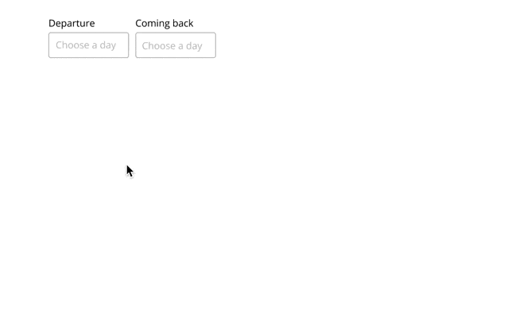</a></p>
        <p>А&nbsp;вот пример для&nbsp;бронирования корпоративной квартиры. Прошлые дни недоступны. Ближайшие 10 дней заняты. Заселиться можно только с&nbsp;21 марта:</p>
        <p class="article__image" id="step6"><a href="../../img/calendar-23.jpg" target="_blank">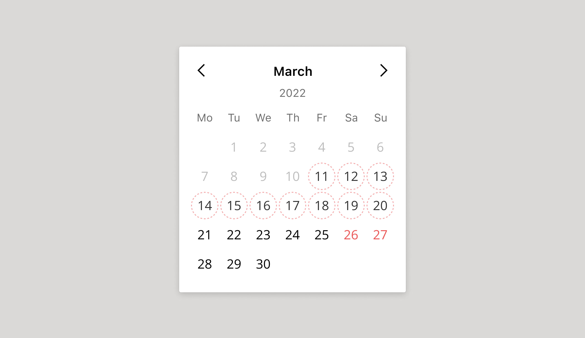</a><span class="article__image-caption">Теоретически можно объединить недоступные дни в&nbsp;колбаску-период, но&nbsp;лучше добавлять функции только когда они реально потребуются</span></p>
      </section>
      <section>
        <h2>Вы ещё живы?</h2>
        <p>Зря. Потому что мы не&nbsp;проработали и&nbsp;половины нюансов. Дизайнеру компонентов предстоит продумать как минимум:</p>
        <ul>
          <li><span>Выделение периодов длиной несколько месяцев (например, 1.01 – 1.05)</span></li>
          <li><span>Цветовой контраст элементов для&nbsp;пользователей с&nbsp;нарушениями зрения (не&nbsp;все различают цвета корректно)</span></li>
          <li><span>Клавиатурную навигацию для&nbsp;людей с&nbsp;ограниченными возможностями (не&nbsp;все могут кликать мышкой)</span></li>
          <li><span>Позиционирование календаря (куда ему выпадать, если снизу не&nbsp;хватает места?)</span></li>
          <li><span>Отображение календаря на&nbsp;экранах мобильных</span></li>
          <li><span>Выделение дат пальцем, а&nbsp;не&nbsp;курсором</span></li>
        </ul>
        <p>Если я начну расписывать каждый из&nbsp;этих пунктов, мы закончим к&nbsp;утру.</p>
        <p>Так что, ребята, берегите продуктовых дизайнеров. Они седеют ради вашего удобства.</p>
      </section>
    </div>
  </div>
<script type="text/javascript" src="./js/bundle.js"></script></body>